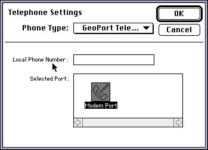

Using Telephony on Macintosh Computers
This section describes the steps you need to perform before you can use the Telephone Manager to open and configure telephone terminals, manage directory numbers, or create and manage call appearances. It shows how toSee Chapter 4, "Call Appearances," for a complete code sample for initializing the Telephone Manager and placing a telephone call.
- determine whether the Telephone Manager is available in the current operating environment
- initialize the Telephone Manager
- find and configure a telephone tool
- create a telephone record
- open a telephone terminal
Determining if the Telephone Manager Is Available
Before calling any Telephone Manager routines, you need to verify that the Telephone Manager is available in the current operating environment and that it has the capabilities you need. You can verify that the Telephone Manager is available by calling theGestaltfunction with thegestaltTeleMgrAttrselector.Gestaltreturns, in its second parameter, a long word whose value encodes the attributes of the Telephone Manager. Listing 1-1 illustrates how to determine whether the Telephone Manager is available.Listing 1-1 Checking for the availability of the Telephone Manager
Boolean MyHasTelephoneManager (void) { OSErr myErr; long myAttrs; Boolean myHasTelMgr = false; myErr = Gestalt(gestaltTeleMgrAttr, &myAttrs); if (myErr == noErr) if (myAttrs & (1 << gestaltTeleMgrPresent)) myHasTelMgr = true; return(myHasTelMgr); }You can also use the
- Note
- For more information on the
Gestaltfunction, see Inside Macintosh: Operating System Utilities.Gestaltfunction to get information about other attributes of the Telephone Manager. For example, you can determine whether the available version of the Telephone Manager supports theTELNewWithResultfunction. See "Gestalt Selector and Response Values" on page 1-21 for complete details on the Telephone Manager attributes you can query.
- Note
- To determine the available version of the Telephone Manager, use the
TELGetTELVersionfunction. See page 1-30 for details.
Initializing the Telephone Manager
Once you've determined that the Telephone Manager is available in the current operating environment, you need to initialize the Communications Toolbox and the Telephone Manager itself. You can use the functionMyInitCTBManagersdefined in Listing 1-2 to perform this initialization.Listing 1-2 Initializing the Communications Toolbox and Telephone Manager
OSErr MyInitCTBManagers (void) { OSErr myErr = noErr; myErr = InitCRM(); //initialize Comm'ns Resource Manager if (myErr == noErr) {//initialize CTB Utilities myErr = InitCTBUtilities(); if (myErr == noErr) myErr = InitTEL();//initialize Telephone Manager } return(myErr); }The functionMyInitCTBManagerscallsInitCRMandInitCTBUtilitiesto initialize the Communications Resource Manager and the Communications Toolbox Utilities. Then, if both these calls succeed,MyInitCTBManagerscallsInitTELto initialize the Telephone Manager. IfMyInitCTBManagersreturnsnoErr, you can proceed to find and configure any telephone tools your application needs to use.Finding Telephone Tools
Before your application can use the services of the Telephone Manager (for instance, to place outgoing calls or receive incoming calls), it needs to open a telephone terminal and configure the telephone tool associated with that terminal. The tool translates the network-independent routines called by your application into network-specific protocols used by the telephone terminal. As you've seen, a Macintosh computer might be connected to several different types of telephone networks (ISDN, POTS, and so forth). As a result, your application needs to select, from among all available tools, the one that provides the services you need to use.In practice, it's likely that any available tool will be able to provide the telephony services you need. (Indeed, it's possible that a particular Macintosh computer supports only one telephone terminal and hence one telephone tool.) Nonetheless, your application should be prepared to look for all telephone tools available in the current operating environment and select one. Listing 1-3 illustrates one way to select a telephone tool. The function
MyGetFirstTelToolreturns the tool ID of the first available telephone tool. A tool ID is an integer that uniquely identifies a telephone tool.Listing 1-3 Finding a telephone tool
- WARNING
- Tool IDs are assigned to tools dynamically at run time, so you should not store them in files.<8batcolor>s
short MyGetFirstTelTool (void) { OSErr myErr = noErr; short myIndex; short myID = -1; Str255 myName; for (myIndex = 1; myID == -1; myIndex++) { myErr = CRMGetIndToolName(classTEL, myIndex, myName); if (myErr != noErr) break; if (*myName == nil) break; myID = TELGetProcID(myName); } return(myID); }TheMyGetFirstTelToolfunction defined in Listing 1-3 calls the Communications Resource Manager functionCRMGetIndToolNameto get the name of a telephone tool. Telephone tools are contained in files of typeclassTEL:enum { classTEL = 'vbnd' };IfCRMGetIndToolNamecompletes successfully and returns a non-empty name, thenMyGetFirstTelToolcallsTELGetProcIDto get the tool ID of that tool, which it returns as its function result. You'll need this tool ID to create a new telephone record and configure the telephone tool, as described in the following two sections.
- Note
- There are other ways to get the name of a telephone tool. For instance, you could save the name of the current tool in a preferences file associated with your application. Then, when your application starts up, it can read the name from that file.
Creating Telephone Records
The Telephone Manager stores information about a particular telephone terminal and its associated telephone tool in a telephone record, a data structure of typeTELRecord:struct TELRecord { short procID; TELFlags flags; short reserved; long refCon; long userData; UniversalProcPtr defproc; Ptr config; Ptr oldConfig; TELTermPtr pTELTerm; long telPrivate; long reserved1; long reserved2; long pTELTermSize; short version; }; typedef struct TELRecord TELRecord; typedef TELRecord *TELPtr, **TELHandle;You need to call eitherTELNeworTELNewWithResultto create a telephone record, which you can then configure with information about the desired terminal and tool. CallingTELNewWithResultis the preferred method of creating a telephone record, because it returns information about any errors that occur in the process of creating the new record. However, theTELNewWithResultfunction is not available in all versions of the Telephone Manager. Accordingly, you need to determine thatTELNewWithResultis available before you call it. Listing 1-4 illustrates how to create a new telephone record.Listing 1-4 Creating a telephone record
TELHandle MyGetTelRecord (short myID) { OSErr myErr = noErr; TELErr myTelErr; long myAttrs; TELHandlemyTerm; if (myID == -1) return(nil); myErr = Gestalt(gestaltTeleMgrAttr, &myAttrs); if (!myErr) if (myAttrs & (1 << gestaltTeleMgrNewTELNewSupport)) { myTerm = TELNewWithResult(myID, 0, 0, 0, &myTelErr); } else { myTerm = TELNew(myID, 0, 0, 0); } return(myTerm); }TheMyGetTelRecordfunction defined in Listing 1-4 requires a tool ID as a parameter. It calls theGestaltfunction to determine whether theTELNewWithResultfunction is available. If it is,MyGetTelRecordcallsTELNewWithResultto create a new telephone record; otherwise,MyGetTelRecordcallsTELNewto create a new telephone record.The
TELNewWithResultandTELNewfunctions fill in as much of the returned telephone record as possible, based on the information passed in. The specified telephone tool also fills in the fields of the telephone terminal record pointed to by thepTELTermfield of the telephone record. See "Telephone Terminal Record" on page 2-16 for complete details about the telephone terminal record.Configuring Telephone Tools
Once you've found a telephone tool and created a telephone record describing it, the final step in preparing your application to work with the Telephone Manager is to configure the telephone tool by filling in the configuration information (contained in theconfigandoldConfigfields) and verifying that all the fields in the record are valid.There are three basic ways in which you can configure a telephone tool. The simplest way is to call the
TELChoosefunction, which displays to the user a standard tool-settings dialog box (Figure 1-3). The dialog box provides controls that allow the user to select the appropriate telephone tool and the desired options.Figure 1-3 The standard tool-selection dialog box

The
TELChoosefunction automatically updates the necessary telephone records, fills in the configuration information and ensures that all the fields are valid. Listing 1-5 illustrates how to callTELChoose.Listing 1-5 Configuring a telephone tool using
TELChooseTELHandle MyConfigTelTool (TELHandle myTelRec) { OSErr myErr = noErr; Point myPoint; if (myTelRec == nil) return(nil); myPoint.v = 80; myPoint.h = 80; myErr = TELChoose(&myTelRec, myPoint, nil); return(myTelRec); }It's possible for the user to select a new telephone tool in the tool-settings dialog box displayed byTELChoose. If the user does select a new tool,TELChoosedisposes of the handle you passed in and creates a new one. In Listing 1-5, the existing or new handle is returned to the caller as the function result.The second way to configure a telephone tool is to display a custom tool-setting dialog box. This method is more complicated than using
TELChoose, and requires you to call six separate functions to display and handle the dialog box. See "Configuring a Telephone Tool Through a Custom Interface," beginning on page 1-39 for complete details on these functions.Finally, you can configure a telephone tool without any user intervention at all by calling the
TELSetConfigfunction, which passes a configuration string to a telephone tool. This string might have been stored in a file or passed to your application from some other application using Apple events. (You can get a configuration string from a tool by callingTELGetConfig.) See "Configuring a Telephone Tool Through a Scripting Language," beginning on page 1-46 for information aboutTELSetConfigandTELGetConfig.Opening a Telephone Terminal
Once you've successfully performed the tasks described in the previous sections, you can callTELOpenTermto open the telephone terminal associated with the tool you've found and configured, as follows:myErr = TELOpenTerm(myTelRec);You need to open a terminal before you can call any Telephone Manager functions that manipulate terminals, directory numbers, or call appearances.
- Note
- You do not need to open a terminal in order to install application-defined message handlers. See the chapter "Telephone Manager Messages" later in this book for information about message handlers.